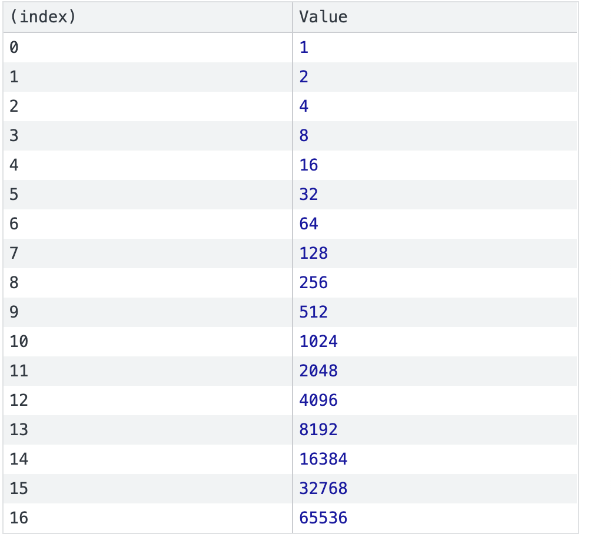

1. Prove that there are infinitely many prime numbers.
Let's approach this question by assuming there are a finite number of prime numbers.
largestprime = the largest prime number
primelist = 2*3*5...*largestprime+1
is primelist divisible by 2? No, there is a remainder of 1.
is primelist divisible by 3? No, there is a remainder of 1.
is primelist divisible by 5? No, there is a remainder of 1.
is primelist divisible by 7? No, there is a remainder of 1.
is primelist divisible by 11? No, there is a remainder of 1.
is primelist divisible by 13? No, there is a remainder of 1.
If we repeat this process, we reach the question:
is primelist divisible by largest prime? No, there is a remainder of 1.
primelist is not divisible by largestprime, making it a prime number.
we have found a contridiction, therefore there are not a finite, but infinite number of primes.
2. Install the pngquant command on your mac to compress png files. We will use this for all png files going forward to conserve space. Run the following commands, then copy the output as the answer to this question. Run in a directory where you have a png file -- here coolFuncs.png is used as an example, replace that with your own file.
brew install pngquant
pngquant --help
pngquant coolFuncs.png
ls -l coolFuncs*
done
3. For the homework that was due June 25, turn it into an html file with associated image files. Take a screenshot and put that as your answer here. Remember: use pngquant to compress the screenshot.
4. Easy console work:
a. a = []
b. for (i=0;i<=16;i++) { a.push(2**i) }
c. console.table(a)

5. Mental math: Study the table you produced in the last question. Prepare to say these numbers from memory as an exercise in class. Use “spaced repetition” -- repeat this study on 3 different days. On the third day write a sentence with some comments regarding what is easy and what is hard about this exercise.
Day 1 Complete.
6. Write two functions (see below) that depend on Unicode. In https://gist.github.com/ivandrofly/0fe20773bd712b303f78 you’ll need lines 154, 155, 161 and 614-637. Run all of the following console.assert commands to make sure your code is correct. If your code is not correct you will get Assertion failed (correct code will just return undefined ... a little weird, but run with it).
a. Write a function xToThe(n) that returns a string of x to the n, where n is any integer. Examples:
I. console.assert(xToThe(12) == "x¹²")
II. console.assert(xToThe(370) == "x³⁷⁰")
III. console.assert(xToThe(-5) == "x⁻⁵")
IV. console.assert(xToThe(1234567890) == "x¹²³⁴⁵⁶⁷⁸⁹⁰"
b. Write a function xSub(n) that returns a string of x with a subscript of n, where n is a non-negative integer. Examples:
I. console.assert(xSub(0) == "x₀");
II. console.assert(xSub(4) == "x₄");
III. console.assert(xSub(678) == "x₆₇₈");
7. Create six different images, and list which functions you choose for each:
A. A graph with five degree 0 polynomial functions
B. A graph with five degree 1 polynomial functions
C. A graph with five degree 2 polynomial functions
D. A graph with five degree 3 polynomial functions
E. A graph with five degree 4 polynomial functions
F. A graph with five degree 5 polynomial functions
8. Write 5 creative and complicated functions and put them all on the same graph. This time two simple rules:
A. no pure polynomial functions
B. no use of Math.random
9. Screeps update:
A. Show a screenshot of Screeps and describe what’s going on
B. 2 days later: show another screenshot, and describe what has changed
C. 3 days after that: show a third screenshot, describe what has changed,
D. Write a summary describing the whole arc of what happened
10. Zombie Flexbox game. Go through two more levels. Take two screenshots at interesting moments and explain all of the Flex details you are working on.
11. What is “nullish coalescing”, the new operator ?? introduced into JavaScript in the year 2020? Do some research/reading, then explain these:
A. x = null; y = x ?? “hello”;
B. x = undefined; y = x ?? “hello”;
C. x = 3.14; y = x ?? “hello”;
D. x = false; y = x ?? “hello”;
E. x = NaN; y = x ?? “hello”;
F. x = “”; y = x ?? “hello”;
G. x = []; y = x ?? “hello”;
H. x = 0; y = x ?? “hello”;
I. x = {}; y = x ?? “hello”;
12. Go to the Tensorflow Playground -- https://playground.tensorflow.org -- and solve each of the four datasets. Take a screenshot of each solution. Discuss.